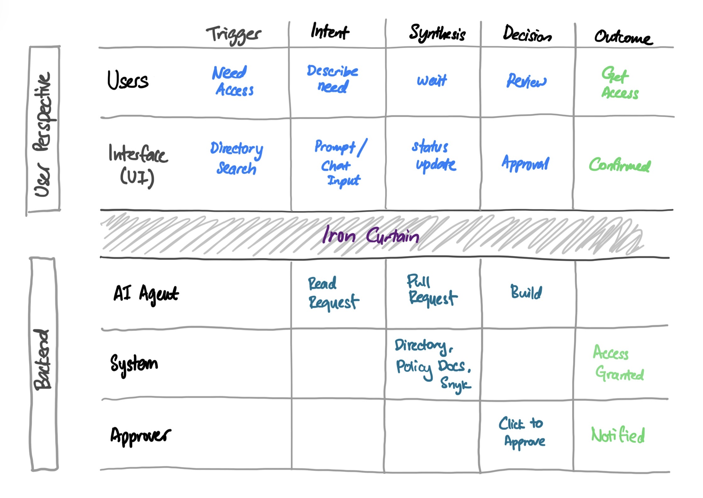

Simplifying Enterprise Access Requests with AI
Getting tens of thousands of employees to trust an AI agent making access decisions on their behalf is a harder design problem than building the agent itself. This case study is about that design challenge — how we replaced a fragmented, manual access request process with an agentic workflow that felt trustworthy, transparent, and faster. The AI handles the research and synthesis. Humans retain the final call. And the experience was designed so users could tell the difference.
The App
Say what you need.
The AI handles the rest.
One conversation replaces a multi-day, multi-tool request process.
Impact
Transforming the access experience at enterprise scale
Significant reduction
in effort across requesters and approvers
Hours reclaimed
per user, per week
Zero
Manual data-gathering steps — replaced by agent-led summaries
Background
What is Active Directory Search?
Active Directory (AD) is the identity and access management system — controlling who can access which tools, systems, and environments. Before this project, getting access to anything required navigating a fragmented, manual process that consumed hours of engineering time every week.
The transformation shifted the system from technical searching to intent-based fulfilment: instead of users manually browsing security groups, an AI agent understands what access is needed and orchestrates the approval workflow automatically.
Cross-Functional Team
A global collaboration across disciplines
Engineering
Lead Engineer
Product
Product Managers
Risk & Governance
Risk Managers
Stakeholder Influence
Navigating the hard conversations
On security
The biggest challenge wasn't designing the AI — it was earning the right to ship it. Security stakeholders had a legitimate concern: what happens when the agent gets it wrong? What if access is granted to the wrong person, or an approver rubber-stamps a recommendation without scrutiny?
Rather than defending the AI, I designed around the fear. Every concern they raised became a design constraint — the Approval Card was built to make approver scrutiny easier, not optional. Human override wasn't a fallback; it was the centrepiece. By the end of the session, the design was answering their questions before they asked them.
On engineering prioritisation
Getting engineering commitment was a different problem. Senior leadership and engineering teams were misaligned on AI priorities, and this project was competing against existing delivery commitments. Rather than escalating the disagreement, I reframed the ask — instead of requesting engineering resource for a full build, I proposed a focused proof of concept on AD Search specifically. Something tangible, scoped, and demonstrable to the wider organisation.
It landed. Leadership saw the potential immediately. Engineering had enough confidence to commit. The security doubts didn't disappear — but they became design inputs rather than blockers.
The Problem
The "Tax" on Innovation: Manual Governance at Scale
Every access request was a multi-step, manual process that created friction for requesters and approvers alike. The system wasn't just slow — it was broken in three compounding ways.
Fragmented Context
Approvers were forced to navigate multiple security dashboards to gather information needed to make a single access decision. Context lived everywhere — and nowhere.
Cognitive Overload
All requests were treated equally regardless of risk level. Low-risk routine requests received the same scrutiny as high-risk system access, creating unnecessary bottlenecks for everyone.
Deployment Friction
Access delays directly impacted user velocity. Multi-day waits for access approvals meant users couldn't ship. The people-tax on innovation was measurable and growing.
Discovery
How might we create a seamless experience without compromising security?
The core design challenge: build an experience that feels effortless for users, while maintaining the rigorous security and regulatory standards requires. Speed and compliance aren't opposites — they just hadn't been designed together yet.
The Trust Gap
The legacy AD Search lacked modern design credibility. Users didn't trust the system to get it right, leading to manual verification loops that added even more time.
The Key Pain Point
Users were "guessing" through security groups, increasing error risk. Without intelligent search, finding the right access group was trial and error.
Validating Assumptions
Research revealed the 7-day delays stemmed from communication gaps, not technical limitations. The bottleneck was human coordination, not system capability.
Global brainstorming across regions globally surfaced many potential solutions. Through internal voting and structured ideation, conversational AI was identified as the highest-impact approach — shifting the burden from the user to the system.
Design decisions were validated at each stage through behavioural signals and productivity data — not just post-launch surveys. Prototype testing tracked intent interpretation and approver decision time, ensuring the AI agent was reducing cognitive load in practice, not just in principle.
Validation — indicative signals across design phases
Baseline and prototype signals are qualitative — drawn from user interviews across seniority levels and moderated testing sessions. Post-launch figures are the formally measured outcomes captured at time of delivery.
The Solution
AI Agents replacing manual AD requests with intelligent orchestration
The core strategy: replace the legacy manual process with AI Agents operating under a "Human-in-the-loop" framework. Intelligence handles the research and synthesis; humans retain final approval authority. Security is maintained, but the cognitive burden shifts to the machine.

To map where AI replaced human effort, I blueprinted the end-to-end workflow across all actors and stages.
Intent-Based Workflows
Shifted from form-filling to conversational interaction. Users describe what they need in natural language; the AI translates intent into the correct access request automatically.
Agentic Data Synthesis
AI agents proactively verify permissions and synthesise risk signals from multiple sources into a single "Approval Card" — giving approvers everything they need in one view.
User-Centric Guardrails
Transparent UX kept users informed of request status at every stage. Security wasn't hidden — it was made legible, building trust in the automated process.
Design Decisions
AI interaction models considered
Before landing on a conversational AI agent, we pressure-tested three alternative directions. Each solved a surface-level problem but left the core intent gap — and approver burden — untouched.
Trust Framework
Designing for trust
The core design challenge wasn't conversational AI — it was making automated decision-making feel legible to the people affected by it. Three principles guided every interaction decision.
Before & After
From blank form to guided conversation
The legacy Active Directory search asked users to name a group they'd never heard of. The redesigned experience starts from intent — and hands approvers a synthesised summary instead of a raw string.
Requester experience
Approver experience
Impact
Transforming the access experience at enterprise scale
Significant reduction
in effort across requesters and approvers
Hours reclaimed
per user, per week
Zero
Manual data-gathering steps — replaced by agent-led summaries
By transforming a legacy bottleneck into a high-velocity technology backbone using governance-by-design principles, the access management process went from a week-long ordeal to a frictionless, AI-assisted workflow. Users spend their time building — not waiting.
Beyond the metrics — what it unlocked